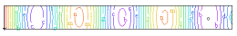

|
vibar |

  
|
|
vibar |
|
{ VIBAR.PDE
This problem analyzes the standing-wave vibrational modes of an elastic bar.
The equations of Stress/Strain in a material medium can be given as
dx(Sx) + dy(Txy) + Fx = 0
dx(Txy) + dy(Sy) + Fy = 0
where Sx and Sy are the stresses in the x- and y- directions,
Txy is the shear stress, and Fx and Fy are the body forces in the
x- and y- directions.
In a time-dependent problem, the material acceleration and viscous force
act as body forces, and are included in a new body force term
Fx1 = Fx0 - rho*dtt(U) + mu*del2(dt(U))
Fy1 = Fy0 - rho*dtt(V) + mu*del2(dt(V))
where rho is the material mass density, mu is the viscosity, and U and V
are the material displacements in the x and y directions.
If we assume that the displacement is harmonic in time (all transients
have died out), then we can assert
U(t) = U0*exp(-i*omega*t)
V(t) = V0*exp(-i*omega*t)
Here U0(x,y) and V0(x,y) are the complex amplitude distributions, and
omega is the angular velocity of the oscillation.
Substituting this assumption into the stress equations and dividing out
the common exponential factors, we get (implying U0 by U and V0 by V)
dx(Sx) + dy(Txy) + Fx0 + rho*omega^2*U - i*omega*mu*del2(U) = 0
dx(Txy) + dy(Sy) + Fy0 + rho*omega^2*V - i*omega*mu*del2(V) = 0
All the terms in this equation are now complex. Separating into real
and imaginary parts gives
U = Ur + i*Ui
Sx = Srx + i*Six
Sy = Sry + i*Siy
etc...
Expressed in terms of the (assumed real) constitutive relations of the material,
Srx = [C11*dx(Ur) + C12*dy(Vr)]
Sry = [C12*dx(Ur) + C22*dy(Vr)]
Trxy = C33*[dy(Ur) + dx(Vr)]
etc...
The final result is a set of four equations in Ur,Vr,Ui and Vi.
Ur: dx(Srx) + dy(Trxy) + rho*omega^2*Ur + omega*mu*del2(Ui) = 0
Ui: dx(Six) + dy(Tixy) + rho*omega^2*Ui - omega*mu*del2(Ur) = 0
Vr: dx(Trxy) + dy(Sry) + rho*omega^2*Vr + omega*mu*del2(Vi) = 0
Vi: dx(Tixy) + dy(Siy) + rho*omega^2*Vi - omega*mu*del2(Vr) = 0
In the absence of viscous effects, these equations separate, with no imaginary
terms appearing in the real equations, and vice versa.
We can therefore solve only for the real components Ur and Vr, which we
will continue to refer to as U and V.
Solving the eigenvalue system
U: dx(Sx) + dy(Txy) + lambda*rho*U = 0
V: dx(Txy) + dy(Sy) + lambda*rho*V = 0
we find the resonant frequencies lambda = omega^2 together with the
corresponding spatial amplitude distributions Uand V.
In order to quantify the "natural" (or "load") boundary condition mechanism,
we can write the equations as
U: div(P) + lambda*rho*U = 0
V: div(Q) + lambda*rho*V = 0
where P = [Sx,Txy]
and Q = [Txy,Sy]
The natural (or "load") boundary condition for the U-equation defines the
outward surface-normal component of P, while the natural boundary condition
for the V-equation defines the surface-normal component of Q. Thus, the
natural boundary conditions for the U- and V- equations together define
the surface load vector.
On a free boundary, both of these vectors are zero, so a free boundary
is simply specified by load(U) = 0 load(V) = 0.
}
title "Vibrating Bar - Modal Analysis"
select modes=8 cubic { Use Cubic Basis } errlim = 0.005
variables U { X-displacement } V { Y-displacement }
definitions L = 1 { Bar length } hL = L/2 W = 0.1 { Bar thickness } hW = W/2 |
 |
nu = 0.3 { Poisson's Ratio }
E = 20 { Young's Modulus for Steel x10^11(dynes/cm^2) }
G = 0.5*E/(1+nu)
rho = 7.8 { Density (g/cm^3) }
{ plane strain coefficients }
E1 = E/((1+nu)*(1-2*nu))
C11 = E1*(1-nu)
C12 = E1*nu
C22 = E1*(1-nu)
C33 = E1*(1-2*nu)/2
{ Stresses }
Sx = (C11*dx(U) + C12*dy(V))
Sy = (C12*dx(U) + C22*dy(V))
Txy = C33*(dy(U) + dx(V))
mag=0.05
initial values
U = 0
V = 0
equations { define the displacement equations }
U: dx(Sx) + dy(Txy) + lambda*rho*U = 0
V: dx(Txy) + dy(Sy) + lambda*rho*V = 0
boundaries
region 1
start (0,-hW)
{ free boundary on bottom, no normal stress }
load(U)=0 load(V)=0 line to (L,-hW)
{ clamp the right end }
value(U) = 0 line to (L,0) point value(V) = 0
line to (L,hW)
{ free boundary on top, no normal stress }
load(U)=0 load(V)=0 line to (0,hW)
load(U) = 0 load(V) = 0 line to close
monitors
grid(x+mag*U,y+mag*V) as "deformation" { show final deformed grid }
plots
grid(x+mag*U,y+mag*V) as "deformation" { show final deformed grid }
contour(U) as "X-Displacement(M)"
contour(V) as "Y-Displacement(M)"
end
Page url: index.html?usage_eigenvalues_vibar.html